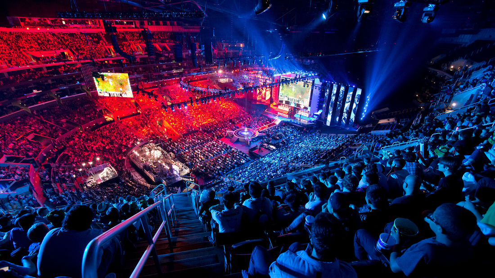

eSports
eSports (also known as electronic sports, esports, e-sports, competitive (video) gaming, professional (video) gaming, or pro gaming) are a form of competition that is facilitated by electronic systems, particularly video games; the input of players and teams as well as the output of the eSports system are mediated by human-computer interfaces. Most commonly, eSports take the form of organized, multiplayer video game competitions, particularly between professional players. The most common video game genres associated with eSports are real-time strategy, fighting, first-person shooter (FPS), and multiplayer online battle arena (MOBA). Tournaments such as The International, the League of Legends World Championship, the Evolution Championship Series and the Intel Extreme Masters provide live broadcasts of the competition, and prize money to competitors. Although organized online and offline competitions have long been a part of video game culture, these were largely between amateurs until the late 2000s when participation by professional gamers and spectatorship in these events saw a large surge in popularity. Many game developers now actively design toward a professional eSport subculture. The genre of fighting games and arcade game fighters have also been popular in amateur[citation needed] tournaments, although the fighting game community has often distanced themselves from the eSports label. In the mid-2010s, the most successful titles featured in professional competition were the multiplayer online battle arena (MOBA) games Dota 2 and League of Legends, and the first person shooter game Counter-Strike: Global Offensive. Other games with significant earnings include Smite, StarCraft II, Call of Duty, Heroes of the Storm, Hearthstone and Overwatch. In 2013, it was estimated that approximately 71.5 million people worldwide watched eSports. The increasing availability of online streaming media platforms, particularly Twitch.tv, has become central to the growth and promotion of eSports competitions. Demographically, Major League Gaming has reported viewership that is approximately 85% male and 15% female, with a majority of viewers between the ages of 18 and 34.Despite this, several female personalities within eSports are hopeful about the increasing presence of female gamers. South Korea has several established eSports organizations, which have licensed pro gamers since the year 2000. Recognition of eSports competitions outside South Korea has come somewhat slower. Along with South Korea, most competitions take place in Europe, North America and China. Despite its large video game market, eSports in Japan is relatively underdeveloped, which has been attributed largely to its broad anti-gambling laws. The global eSports market generated US$325 million of revenue in 2015 and is expected to make $493 million in 2016; the global eSports audience in 2015 was 226 million people.
